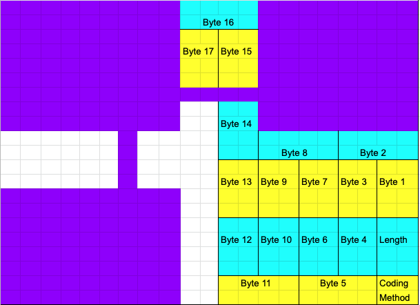

The 21x21 QR code in the puzzle yields noticable.html. Going to the URL that results from appending this filename to the string shown gives a page indicating that the URL must be corrected. Correcting the spelling to noticeable.html gives a page with another 21x21 QR code labeled with a cardinal direction, and a 15x15 pattern of black and white squares which is not a valid QR code. This 21x21 QR code again gives an html filename that must have its spelling corrected to lead to another page with another 21x21 QR code labeled with a direction, and another 15x15 pattern. Eventually, the pages are found to form a 3x3 array:
appo[g]giatura.html |
bouga[i]nvillea.html |
dip[h]thongal.html |
gran[d]daughter.html |
notic[e]able.html |
opales[c]ent.html |
sa[f]flower.html |
shi[b]boleth.html |
skatebo[a]rder.html |
Putting the 15x15 patterns together in this arrangement yields a 45x45 QR code which yields the following text:
For each 21x21 QR code, instead of just scanning it, directly decode the text encoded by its data-encoding region (ignoring all error correction).
The steps involved in directly examining the data-encoding portions of each 21x21 QR code (which will not just silently correct errors as an ordinary QR reader will) are as follows:
Look at the format info to determine the "mask", which all the data-encoding portions must be xored with. In fact, all these 21x21 QR codes have the same format info, and use the same mask, which is alternating rows of 1s and 0s.
Check the "Coding Method" box (xored with the mask) to verify that this uses "bytes" encoding (bytes of UTF-8 text). (Which can probably be guessed, since the file names consist of lowercase letters.)
With "bytes" encoding, the data-encoding portions are laid out as follows:
with the bits of each byte (labeled by power of two) being as follows:
| Byte 1, 6, 7, 12, 13, 14, 15 | Byte 2, 8 | Byte 3, 4, 9, 10 | Byte 5, 11 | ||||||||||||||||||||||||||||||||
|---|---|---|---|---|---|---|---|---|---|---|---|---|---|---|---|---|---|---|---|---|---|---|---|---|---|---|---|---|---|---|---|---|---|---|---|
|
|
|
|
So each byte (after xoring with the mask) can just be read out directly. Doing this shows that the texts encoded are (in order of the letter missing in the original misspelling):
| Encoded | Letter missing | Letter replaced by underscore |
|---|---|---|
_kateborder.html |
A | S |
shibolet_.html |
B | H |
op_lesent.html |
C | A |
gran_aughter.html |
D | D |
n_ticable.html |
E | O |
saflo_er.html |
F | W |
appog_atura.html |
G | I |
diptho_gal.html |
H | N |
bou_anvillea.html |
I | G |
and the letters replaced by underscore in this order spell the answer, SHADOWING.